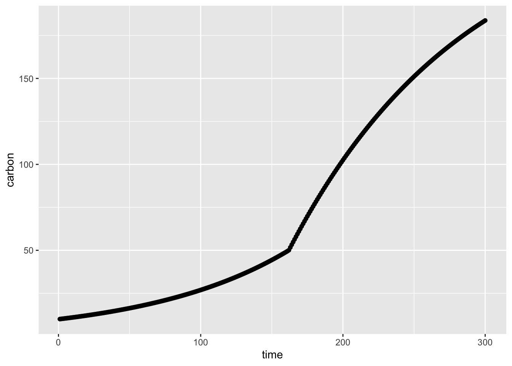
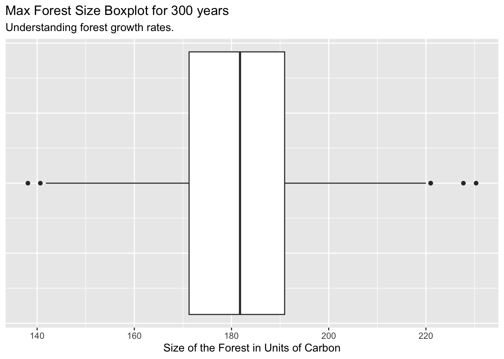
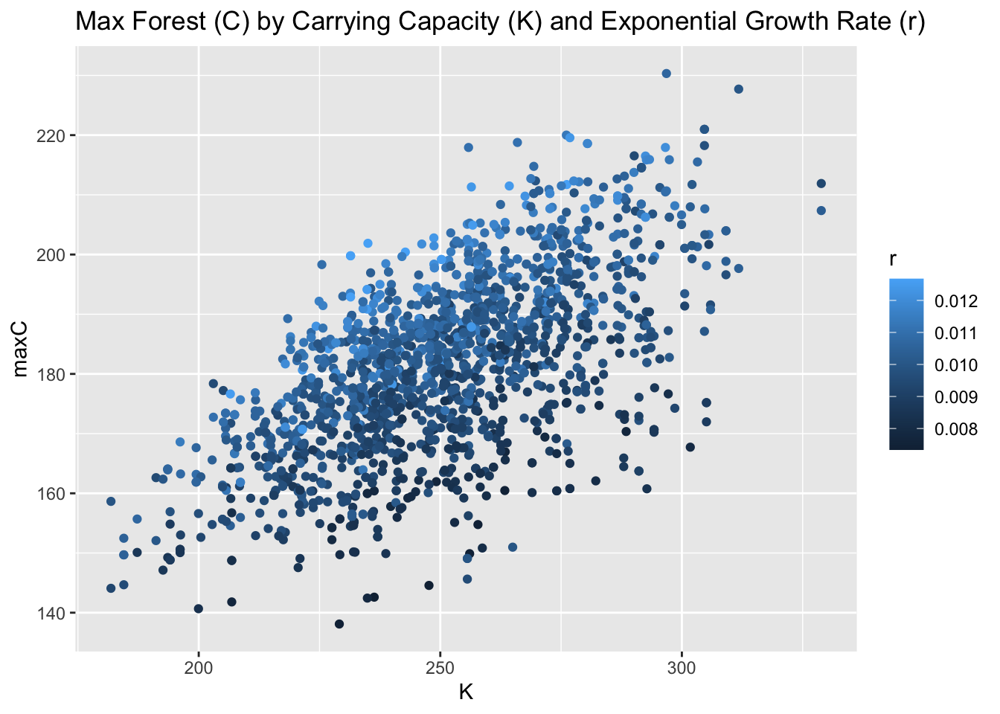

library(tidyverse)
library(deSolve)
library(here)
library(sensitivity)
# Set the seed
set.seed(230)Assignment: Using Sobol with an ODE
Consider the following model of forest growth (where forest size in measured in units of carbon (C))
\(dC/dt = r*C\) for forests where C is below a threshold canopy closure
\(dC/dt = g*(1- C/K)\) for forests where carbon is at or above the threshold canopy closure
and \(K\) is a carrying capacity in units of carbon
The size of the forest (\(C\)), Canopy closure threshold and carrying capacity are all in units of carbon
You could think of the canopy closure threshold as the size of the forest at which growth rates change from exponential to linear You can think of \(r\), as early exponential growth rate and \(g\) as the linear growth rate once canopy closure has been reached
Your task
Graph the results of the sensitivity analysis as a box plot of maximum forest size and record the two Sobol indices (S and T).
In 2-3 sentences, discuss what the results of your simulation might mean. (For example think about how what parameters climate change might influence).
Submit rendered Quarto pdf with model implementation, graphs and sensitivity analysis and R file with your model
You can work in groups or individually
Extra Credit
Compute Sobol indices for a second metric: forest size after a 100 years
Grading Rubric
- Implement this model in R (as a differential equation)
# Source function
source(here::here(("assignment6/forest_growth_func.R")))- Run the model for 300 years (using the ODE solver) starting with an initial forest size of 10 kg/C, and using the following parameters:
- canopy closure threshold of 50 kgC
- \(K\) = 250 kg C (carrying capacity)
- \(r\)= 0.01 (exponential growth rate before before canopy closure)
- \(g\) = 2 kg/year (linear growth rate after canopy closure)
- Graph the results. Here you are graphing the trajectory with the parameters as given (e.g no uncertainty)
# Define Variables
tm <- seq(from = 1, to = 300)
Cinitial <- 10
gps <- list(r = 0.01, g = 2, K = 250)
# Run ode
res <- ode(Cinitial, tm, forest_growth_func, gps)
# Change column names
colnames(res) <- c("time", "carbon")
# Graph
ggplot(as.data.frame(res), aes(time, carbon)) +
geom_point() 
- Run a sobol global (vary all parameters at the same time) sensitivity analysis that explores how the estimated maximum forest size (e.g maximum of \(C\) 300 years, varies with these parameters
- pre canopy closure growth rate (\(r\))
- post-canopy closure growth rate (\(g\))
- canopy closure threshold and carrying capacity(\(K\))
Assume that parameters are all normally distributed with means as given above and standard deviation of 10% of mean value
Generate the Sample parameters (r, g, K) with means from above and sd of 10% of the mean values
# Generate sample paramters
np <- 300
r <- rnorm(mean = 0.01, sd = 0.001, n = np)
g <- rnorm(mean = 2, sd = 0.2, n = np)
K <- rnorm(mean = 250, sd = 25, n = np)
thresh <- rnorm(mean = 50, sd = 5, n = np)
x1 <- cbind.data.frame(r = r, g = g, K = K, thresh = thresh)
# Generate sample paramters... again!
r <- rnorm(mean = 0.01, sd = 0.001, n = np)
g <- rnorm(mean = 2, sd = 0.2, n = np)
K <- rnorm(mean = 250, sd = 25, n = np)
thresh <- rnorm(mean = 50, sd = 5, n = np)
x2 <- cbind.data.frame(r = r, g = g, K = K, thresh = thresh)Create the Sobol Object
# Create the sobol object
sens_forest <- sobolSalt(model = NULL,
x1, x2,
nboot = 300)
# Change the Column names
colnames(sens_forest$X) <- c("r", "g", "K", "thresh")
# Look at it
head(sens_forest$X) r g K thresh
[1,] 0.009765165 1.979593 249.5188 47.40507
[2,] 0.010101267 1.863048 255.3890 56.68873
[3,] 0.010328682 2.213304 246.7914 54.96520
[4,] 0.010361746 1.793459 232.4044 49.46269
[5,] 0.010442663 2.023800 260.7258 45.37963
[6,] 0.010040810 1.709215 225.5551 54.58465Create a Function that shows important metrics
# The metrics: the max forest size (Carbon units)
metricfunc <- function(result) {
maxC <- max(result$Carbon)
return(list(maxC = maxC))
}Build a Wrapper Function: runs ode and extracts the results for all the parameters at once
wrapper_func <- function(r, g, K, thresh, Cinitial, simtimes, odefunc, metricfunc) {
parms <- list(r = r, g = g, K = K, thresh = thresh) # List of parameters
results <- ode(y = Cinitial, # Run the ODE function
times = simtimes,
func = odefunc,
parms = parms)
results <- as.data.frame(results) # ODE results as a df
colnames(results) <- c("times", "Carbon")
# Get the metrics: Max forest size
metrics <- metricfunc(results)
#metrics <- metricfunc(as.data.frame(results))
return(metrics)
}Use the wrapper function to explores how the estimated maximum forest size changes as the parameters vary
Cinitial <- 10
# Use pmap to run the wrapper function over the sobol `sens_forest` object
allresults <- as.data.frame(sens_forest$X) %>% pmap(wrapper_func,
Cinitial = Cinitial,
simtimes = tm,
odefunc = forest_growth_func,
metricfunc = metricfunc)
#head(allresults) # Look at pmap results
# Extract the results from pmap into a data frame
allres <- allresults %>% map_dfr(`[`, c("maxC"))
head(allres) # Look at dataframe # A tibble: 6 × 1
maxC
<dbl>
1 181.
2 181.
3 192.
4 172.
5 192.
6 164.- Graph the results of the sensitivity analysis as a box plot of maximum forest size and record the two Sobol indices (S and T).
Graph with a boxplot
ggplot(allres) +
geom_boxplot(aes(x = maxC)) +
labs(title = "Max Forest Size Boxplot for 300 years",
subtitle = "Understanding forest growth rates.",
x = "Size of the Forest in Units of Carbon") +
theme_gray() +
theme(axis.ticks.y = element_blank(),
axis.text.y = element_blank())
Compute the Sobol Indicies
# tell our original Sobol object about the results.
sens_forest_sobol_ind <- sensitivity::tell(sens_forest, allres$maxC)
# Change rownames
rownames(sens_forest_sobol_ind$S) <- c("r", "g", "K", "thresh")
rownames(sens_forest_sobol_ind$T) <- c("r", "g", "K", "thresh")
# Look at Sobol Indicies
sens_forest_sobol_ind$S original bias std. error min. c.i. max. c.i.
r 0.3416030 -0.001715030 0.05103503 0.2391921 0.4488745
g 0.2375957 -0.005055127 0.05913623 0.1323418 0.3656443
K 0.4100953 -0.007877857 0.05188797 0.3107562 0.5178482
thresh -0.0291862 -0.006147332 0.06116667 -0.1488903 0.1127871sens_forest_sobol_ind$T original bias std. error min. c.i. max. c.i.
r 3.996792e-01 4.522014e-03 4.231836e-02 3.104829e-01 4.683979e-01
g 2.891391e-01 4.238204e-03 3.090323e-02 2.119044e-01 3.471015e-01
K 4.139646e-01 2.402254e-03 3.701849e-02 3.407178e-01 4.804876e-01
thresh -4.538592e-13 2.216816e-13 3.810447e-13 -1.453390e-12 6.254744e-14Looking at Sobol Indicies:
The main effect / first order sensitivity (
sens_forest_sobol_ind$S) results show all the parameters are impacting the output variance. The carrying capacity (K) is impacting the output variance the most, followed closely by the exponential growth rate (r), then post-canopy growth rate (g), and threshold matters the least.The total effect (
sens_forest_sobol_ind$T) results show all parameters impact the variance due to parameter interactions, especially carrying capacity (K) and exponential growth rate (r), followed by post-canopy growth rate (g). Whereas, the threshold matters the least.
Graph
df <- as.data.frame(cbind(allres, sens_forest$X))
ggplot(df) +
geom_point(aes(x = K, y = maxC, color = r)) +
labs(title = "Max Forest (C) by Carrying Capacity (K) and Exponential Growth Rate (r)")
- In 2-3 sentences, discuss what the results of your simulation might mean. (For example think about how what parameters climate change might influence).
This results suggest K (carrying capacity) and r (growth rate) are the most influential parameters in explaining about ~40% of variance in maximum forest size, and post-canopy growth rate (g) matter the least.
Since K explains the most variance, forests are most sensitive to anything that limits the maximum amount of carbon a forest can store, such as climate change induced droughts, wildfires, and permanent habitat loss. Furthermore, the model shows that growth rate (r) this is the second biggest lever; therefore, stressors to young growing trees, such as climate changes induced elevated temperatures and CO2 levels, largely impact forest sizes.
EXTRA CREDIT: Compute Sobol indices for a second metric: forest size after a 100 years
# Create Sobol object
sens_forest2 <- sobolSalt(model = NULL,
x1, x2, nboot = 300,
scheme = "B")
# Change the Column names
colnames(sens_forest2$X) <- c("r", "g", "K", "thresh")
# Make sobol object a dataframe
parms_2 <- as.data.frame(sens_forest2$X)
# Use pmap to run the wrapper function over the sobol `sens_forest` object
allresults2 <- as.data.frame(sens_forest2$X) %>% pmap(wrapper_func,
Cinitial = Cinitial,
simtimes = tm,
odefunc = forest_growth_func,
metricfunc = metricfunc)
# Extract the results from pmap into a data frame
allres2 <- allresults2 %>% map_dfr(`[`, c("maxC"))
# tell our original Sobol object about the results.
sens_forest_sobol_ind2 <- sensitivity::tell(sens_forest2, allres2$maxC, res.names = "ga")
# Change rownames
rownames(sens_forest_sobol_ind2$S2) <- c("r-g", "r-K", "r-thresh", "g-K", "g-thresh", "K-thresh")
# Look at Sobol Indicies
sens_forest_sobol_ind2$S2 original bias std. error min. c.i. max. c.i.
r-g 0.05716589 0.005439312 0.05831100 -0.06984248 0.1649546
r-K 0.03210947 0.006866237 0.05800379 -0.09660526 0.1509934
r-thresh 0.02918620 0.005407650 0.05824840 -0.08988026 0.1364299
g-K 0.01110281 0.005635239 0.06187449 -0.11226710 0.1292559
g-thresh 0.02918620 0.005407650 0.05824840 -0.08988026 0.1364299
K-thresh 0.02918620 0.005407650 0.05824840 -0.08988026 0.1364299# Boxplot
ggplot(allres2) +
geom_boxplot(aes(x = maxC)) +
labs(title = "Max Forest Size Boxplot for 100 years",
subtitle = "Understanding forest growth rates.",
x = "Size of the Forest in Units of Carbon") +
theme_gray() +
theme(axis.ticks.y = element_blank(),
axis.text.y = element_blank())These second-order indices are all small with close to zero confidence intervals. Therefore, there is no significant pairwise interactions between parameters and r, g, K, and thresh act independently.